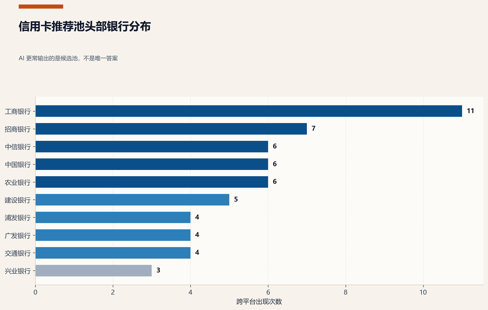
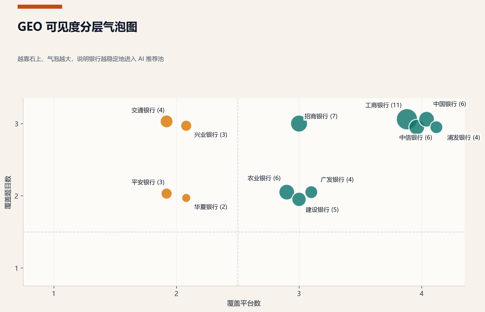

01
AI可见度诊断
用真实问题测试 AI 当前如何看见你、引用你、推荐你。先建立基线，再决定从哪里改。
- 真实问题而不是抽象指标
- 多平台同时观察
- 把“被看见”与“被推荐”分开看
明天对负责人演示时，我们不从技术讲起，而从经营动作讲起。先判断位置，再理解用户怎么问，再把问题、答案和信源组织成可持续资产。
用真实问题测试 AI 当前如何看见你、引用你、推荐你。先建立基线，再决定从哪里改。
梳理用户从认知到选择的关键决策节点与触发问题，找到真正影响推荐的问题入口。
把高频、场景、比较与长尾问题沉淀成结构化问题矩阵，形成内容建设底盘。
围绕重点问题设计 AI 友好的标准答案结构，让内容更容易被理解、引用和比较。
建设官网、案例、知识页与外部权威内容的信任网络，让推荐真正有依据。
持续监测多平台 AI 的可见、引用与推荐变化，把监测结果转成迭代动作。
这里不是展示所有原始数据，而是把负责人最关心的三件事变成可读界面：当前 GEO 层级、跨平台覆盖稳定性、在哪些问题里更容易进入推荐池。
同样是“出现”，有的是单点提及，有的是被纳入比较，有的则已经稳定进入推荐池前列。这个阶梯模型的价值，是让团队知道该补内容、补信源，还是直接补答案结构。
我们先用三类真实高频问题把信用卡决策入口拆开：选型型、规则型、场景型。下面这个面板可以切换问题，看头部银行格局、信源结构和该问题的经营意义。
当问题是“出境信用卡哪家好”时，社区/UGC 与媒体内容共同决定场景塑形，官方内容更多承担规则确认和权益补强。
对负责人来说，平台差异不只是“谁答得长”，而是“谁更容易把品牌带进可信推荐链路”。这里切换平台，可以快速看到不同平台的抓取能力、官方支撑程度和适合观察的优化方向。
在本轮结果里，豆包的官方来源支撑最强，更适合观察官网、权益页、FAQ 是否被正确吸收。
更像攻略型回答，擅长把不同权益组织成清晰推荐框架。
如果平台更依赖官方内容，官网结构化字段、权益页和 FAQ 的价值就更高。
优先检查高频问题页、权益字段表达和标准答案结构是否清晰可抽取。
这个初版演示站已经接上了本轮信用卡报告的关键图表。明天演示时，你可以用交互诊断先拉出问题，再用图表证据把判断坐实。
这张图适合解释“AI 不会只给单一答案，而是形成一个跨平台候选池”，非常适合切入经营视角。

这张图适合解释 L0-L3 模型。不是谁偶然出现过，而是谁已经稳定进入推荐池和比较逻辑。
